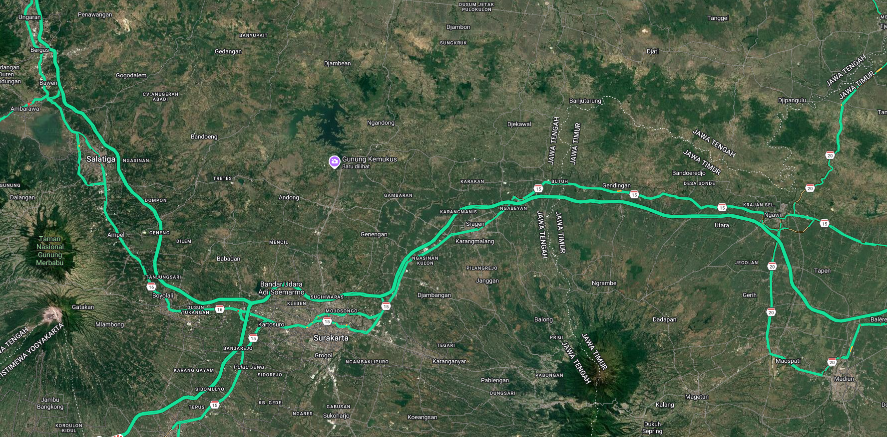
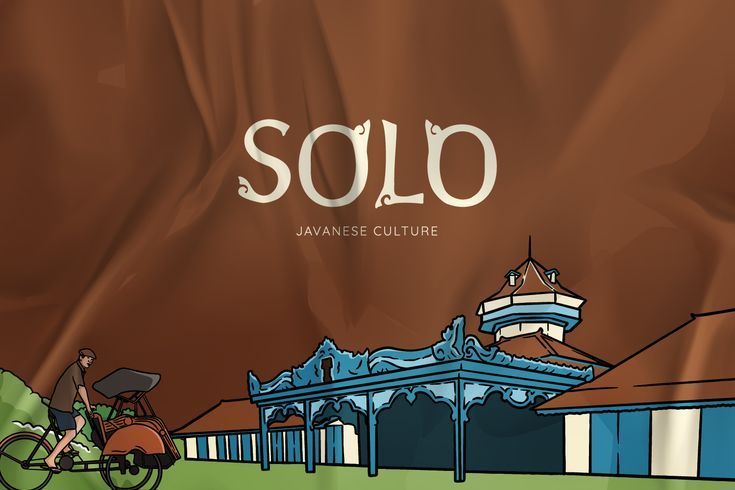
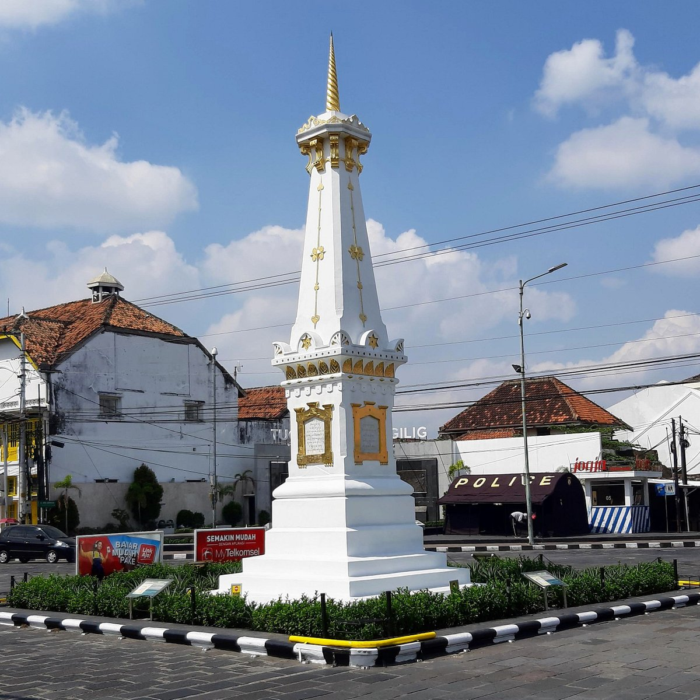

gabut bangetttttttt jadi bikin ini aja
Our
Journey
main kemana kitaaaa, untuk jadi bagian dari cerita kita

titik-titik yang pernah kita datangi
jejak perjalanan
Kita, dan Kota-kotanya
Sragen

Solo
Yogya
Next?
kota pertama
Sragen


lanjut ke
Solo


dan sampai di